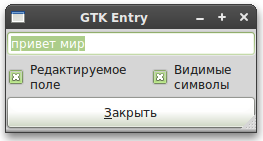

#!/usr/bin/env python
# --*-- coding:utf-8 --*--
# example packbox.py
import gi
gi.require_version('Gtk', '3.0')
#from gi.repository.Gtk import *
import gi.repository.Gtk as gtk
class EntryExample:
def enter_callback(self, widget, entry):
entry_text = entry.get_text()
print("Entry contents: %s\n" % entry_text)
def entry_toggle_editable(self, checkbutton, entry):
entry.set_editable(checkbutton.get_active())
def entry_toggle_visibility(self, checkbutton, entry):
entry.set_visibility(checkbutton.get_active())
def __init__(self):
# Создаём новое окно
window = gtk.Window()
window.set_size_request(250, 100)
window.set_title("GTK Entry")
window.connect("delete_event", lambda w, e: gtk.main_quit())
vbox = gtk.VBox(False, 0)
window.add(vbox)
vbox.show()
entry = gtk.Entry()
entry.set_max_length(50)
entry.connect("activate", self.enter_callback, entry)
entry.set_text("привет")
entry.insert_text(" мир", len(entry.get_text()))
entry.select_region(0, len(entry.get_text()))
vbox.pack_start(entry, True, True, 0)
entry.show()
hbox = gtk.HBox(False, 0)
vbox.add(hbox)
hbox.show()
check = gtk.CheckButton("Редактируемое\nполе")
hbox.pack_start(check, True, True, 0)
check.connect("toggled", self.entry_toggle_editable, entry)
check.set_active(True)
check.show()
check = gtk.CheckButton("Видимые\nсимволы")
hbox.pack_start(check, True, True, 0)
check.connect("toggled", self.entry_toggle_visibility, entry)
check.set_active(True)
check.show()
button = gtk.Button(stock=gtk.STOCK_CLOSE)
button.connect("clicked", lambda w: gtk.main_quit())
vbox.pack_start(button, True, True, 0)
# button.set_flags(gtk.CAN_DEFAULT)
button.grab_default()
button.show()
window.show()
def main():
gtk.main()
return 0
if __name__ == "__main__":
EntryExample()
main()